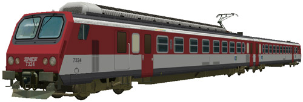
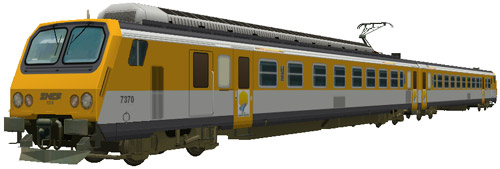
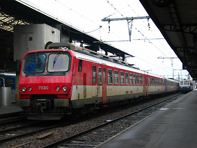
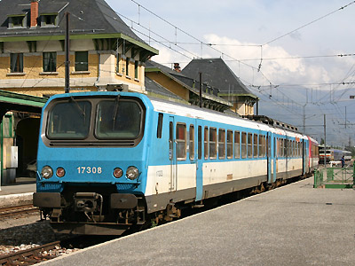
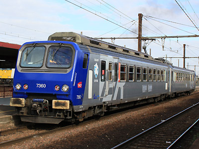
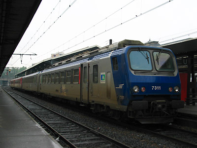
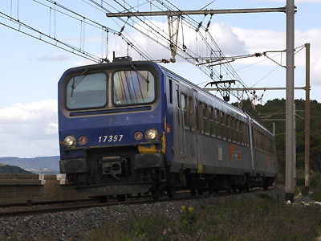
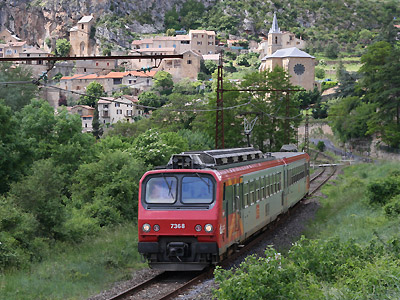

La Z 7300 version 
S. Froger a réalisé un pack de Z2 comportant les Z 7324 TER Aquitaine et Z 7370 TER Languedoc-Roussillon.

Ferrovia - 24 Octobre 2012
Z 7300 - Z 97300
Z2 Omnibus 1,5kV continu
Les Z 7300 sont des éléments automoteurs monocourants 1,5kV continu à deux caisses conçus pour les services régionaux omnibus et construits à 71 exemplaires de 1980 à 1984 auxquels s'ajoutent les quatre éléments Z 97381 à 97384 identiques mais financées par les régions Midi-Pyrénées et Languedoc-Roussillon. Elles sont exploitées dans les régions Centre (Tours-Orléans-Bourges), Aquitaine (ligne du médoc, ligne des Landes), Midi-Pyrénées (étoile de Toulouse vers Latour, Mautauban, Carcassonne...) et Languedoc-Roussillon (Ligne des Causses, Arc méditerranéen, transversale Narbonne-Toulouse).
La composition de l'élément est la Z 7300 proprement dite (motrice à adhérence totale à quatre moteurs) et une ZR 17300. Elles peuvent fonctionner en unités multiples jusqu'à trois éléments entres elles et avec les Z 7500, Z 9500, Z 9600 qui composent le parc des "Z2".
Les meilleures missions des Z 7300 ont été reprises par les Z 21500 plus véloces. Fin 2011, les premières radiations ont eu lieu avec les Z 7308, 7318, 7331 et 7338. Les autres rames ont été rénovées. L'arrivée prochaine des Régiolis et des Régio2N risque néanmoins de faire de l'ombre aux Z2 dont la chaîne de traction électromécanique et les moteurs à collecteur sont d'un entretien coûteux.
Les livrées
Les Z 7300 ont adopté au début de leur carrière la livrée bleue, rouge et grise commune à toutes les Z2. Les deux Z 97303 et 97304, renumérotées plus tard Z 97383 et 97384, appartenant à l'EPR Languedoc-Roussillon, ont porté une livrée spécifique "TLR" à base de blanc et de bandes bleu, vert et orange.
La régionalisation des transports au cours des années 1980 a conduit à leur appliquer le schéma de couleurs TER à base de blanc et d'une couleur au choix parmi quatre : bleu isabelle (Centre, Midi-Pyrénées), rouge (Aquitaine), jaune lythos (Languedoc-Roussillon). Le vert jade n'a pas été appliqué sur cette série.
Le nouveau schéma de peinture TER gris métallisé et bleu fut en premier appliqué par la région Centre qui profita de cette rénovation pour modifier profondément ses Z 7300 par l'ajout d'une ventilation réfrigérée. Les autres régions ont opté pour une rénovation moins coûteuse. Le grand logo TER ne fut appliqué que sur les éléments Centre et abandonné pour les rénovations ultérieures.
Quelques données techniques
Constructeur : Francorail-ANF
Tension d'alimentation : continu 1,5 kV
Chaîne de traction : Rhéostat
Motorisation : 2 moteurs à courant continu par bogie, 2 bogies moteurs sur la motrice.
Puissance totale : 1275 kW
Longueur : 50,2m
Masse : 107t
Pour plus d'info :
La fiche Z 7300 sur Wikipedia
Fiche technique des Z 7300 de Florent Brisou
L'inventaire des Z 7300 sur Trains du Sud-Ouest

La Z 7330 à Toulouse (01/06/2004)

La Z 7308 à Latour de Carol Enveitg, radiée fin 2011 (10/08/2005)

La Z 7360 Centre aux Aubrais-Orléans (20/09/2011)

La Z 7311 Aquitaine à Toulouse (01/06/2004)

La Z 7357 Languedoc-Roussillon à Port-la-nouvelle, l'ancienne livrée jaune refait surface (30/04/2008)

La Z 7368 Languedoc-Roussillon à Peyre (18/05/2009)
La Z 7300 version 
S. Froger a réalisé un pack de Z2 comportant les Z 7324 TER Aquitaine et Z 7370 TER Languedoc-Roussillon.